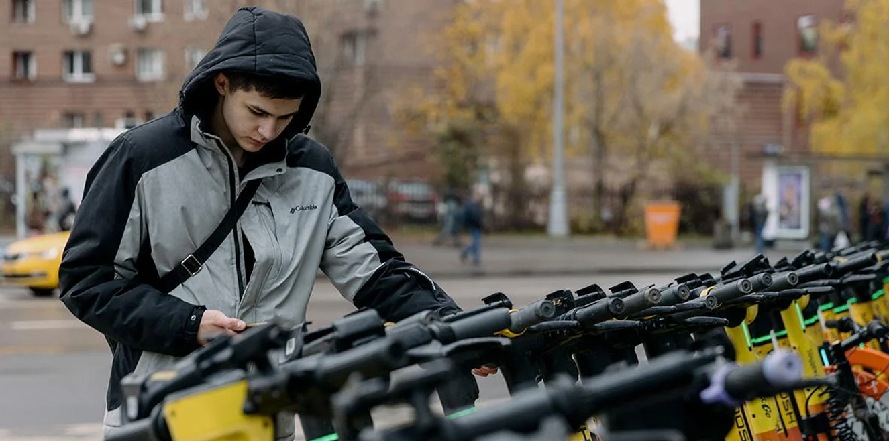

В Москве приостановили аренду электросамокатов
Операторы кикшеринга приостановили аренду электросамокатов и велосипедов из-за снега в Москве.
27 апреля 2026 год, Москва

Операторы кикшеринга приостановили аренду электросамокатов и велосипедов из-за снега в Москве. Об этом сообщил заммэра столицы Максим Ликсутов, передает пресс-служба столичного дептранса.
Кроме того, операторы каршеринга ограничили возможность арендовать автомобили с летней резиной. Ограничения на аренду продлятся до улучшения погодных условий, отметили в публикации.
Дептранс также призвал владельцев личных самокатов и велосипедов, а также автомобилистов, сменивших резину на летнюю, отказаться от поездок и воспользоваться городским транспортом.
Москву накрыло снегом в ночь на 27 апреля. Дептранс предупредил, что мокрый снег в Москве может сохраниться до вечера вторника, 28 апреля. По прогнозу ведущего специалиста информационного портала «Метеоновости» Татьяны Поздняковой, в ближайшие дни температура в столице будет не выше плюс 5 градусов, а местами возможна гололедица.
Из-за неблагоприятных погодных условий командиры некоторых воздушных судов решили отложить вылет из московского аэропорта Внуково.